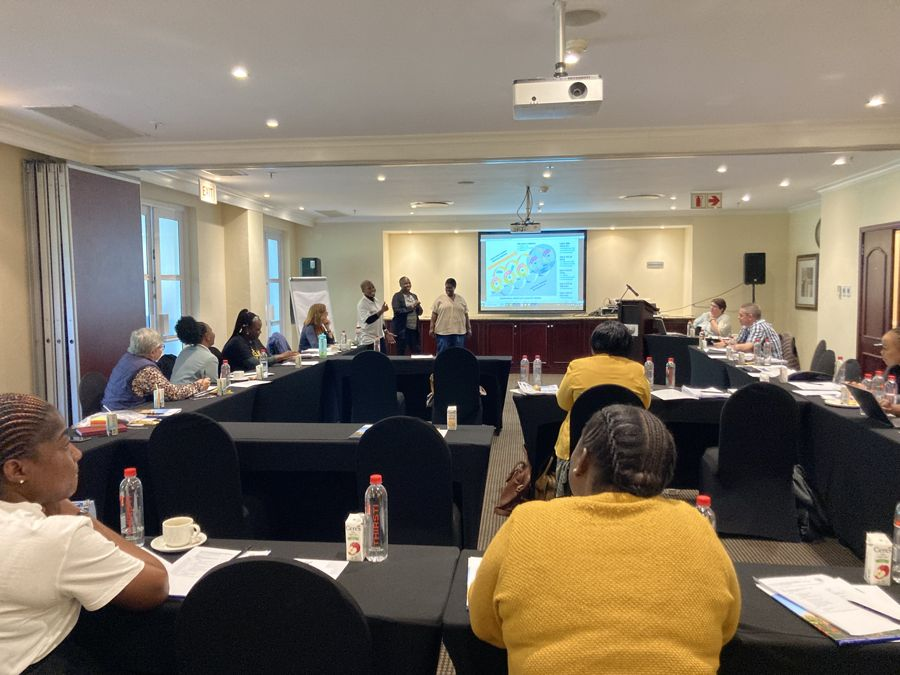

News · 2023
VAPAR close out with province and district

We disseminated the VAPAR process and outcomes over a series of five action-learning cycles from 2017–23 to co-produce and use evidence of practical relevance for health systems strengthening with community and government stakeholders. With the VAPAR programme formally coming to an end on 31 May 2023, we shared an overview of the programme with a specific focus on outcomes, connecting with provincial and district colleagues including PHC managers, the Director of Research, provincial health research and ethics committee members, the Chief Director and Director HAST, the Director of community health services, the communications manager, development partners and local authority representatives.
Reflections on cycles 1 to 3
Two CHW representatives shared that the VAPAR process helped them gain confidence they previously lacked — to the point of standing in front of managers and speaking with confidence — and that they apply the knowledge and PAR tools to reduce the number of HIV and TB clients lost to follow-up, using the problem tree to solve problems in their line of work. The programme also improved the relationship between CHWs and their outreach team leaders. CHWs shared their learning with other CHWs and with their managers, enabling a systematic, collaborative and action-orientated approach to problem-solving. Health managers confirmed CHWs are doing a great job curbing HIV/TB loss to follow-up, while noting the rate fluctuates due to factors including community uprisings, changes of address and administrative errors.
At a broader health-system level, VAPAR facilitated role clarification for CHWs as a fairly new cadre. Clearer roles supported uptake of CHW services and acceptance by community members, who previously would at times refuse visits due to the stigma associated with home-based care from the era of caring for terminally ill AIDS patients. Community representatives highlighted that everyone’s opinion was valued and all were treated equally, that they learned to identify and solve problems, and that the radio dissemination was a great experience.
Reflections on cycles 4 and 5, and overall
Cycle 4 CHWs reported doing more in the clinic than before, with improved public speaking, confidence and facilitation skills. Cycle 5 trainer CHWs appreciated being made leaders; facilitating training motivated them to research before every workshop. Health programme managers encouraged CHWs to build up others, acknowledged the potential to impact health outcomes through a skilled and empowered CHW base, and stressed OTL and OPM support as key. District representatives requested further sharing of the learning in their districts, and the Provincial Health Research and Ethics Committee commended the integration with service delivery — learning to be taken forward as a requirement for other research projects in the province. Programme managers requested further roll-out of the CHW training should funding become available.
That further roll-out happened: see the provincial scale-up →